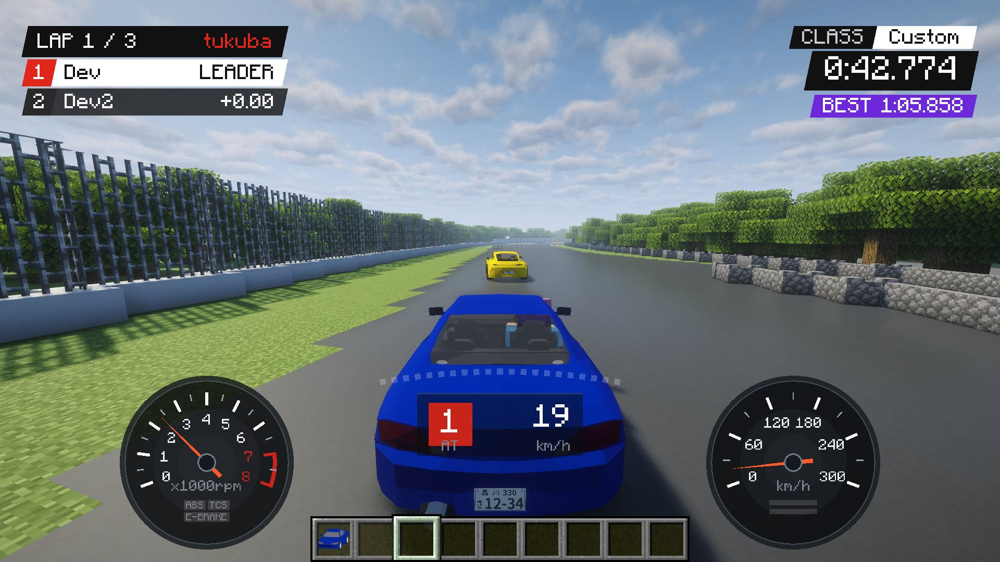
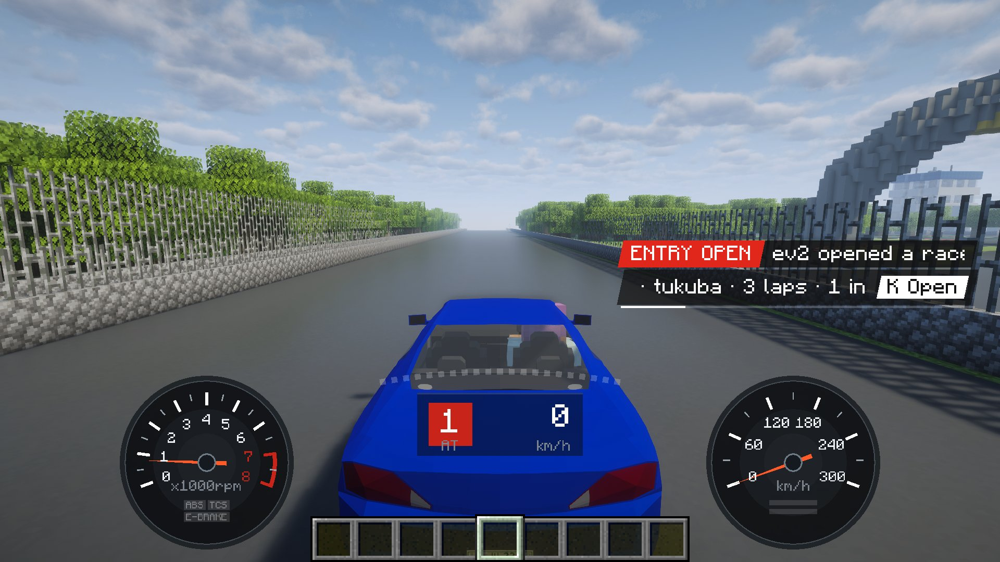
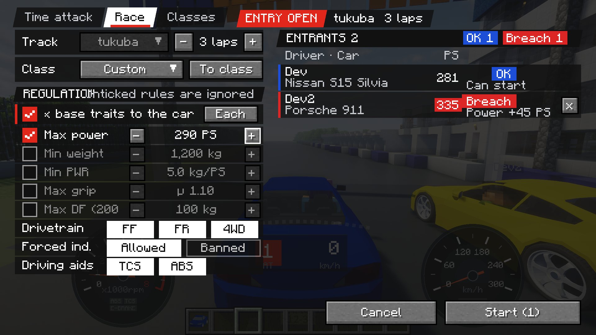
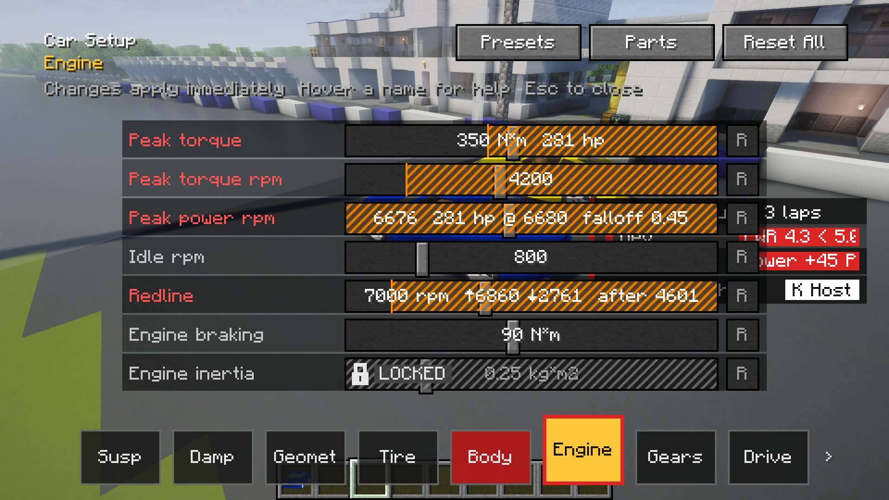
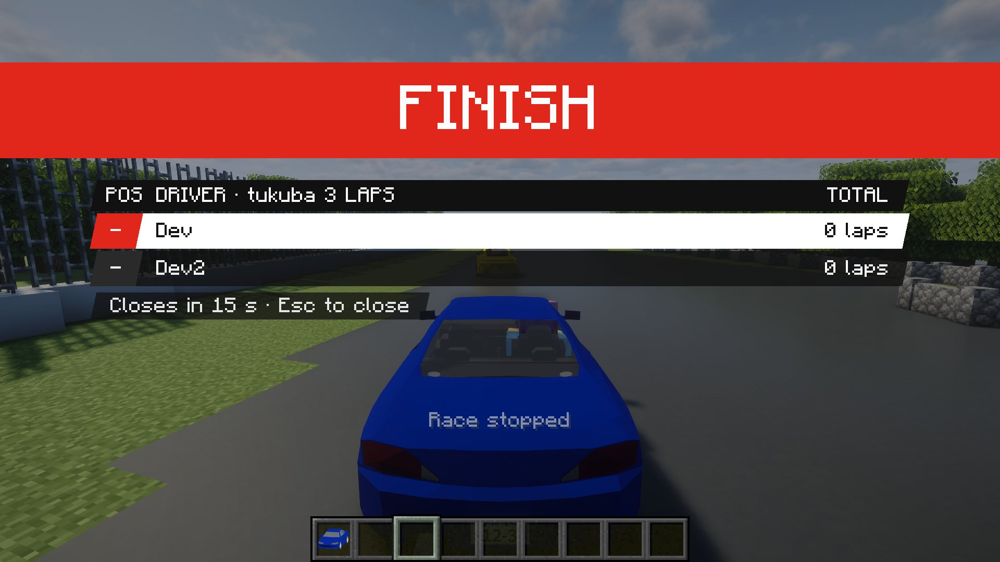
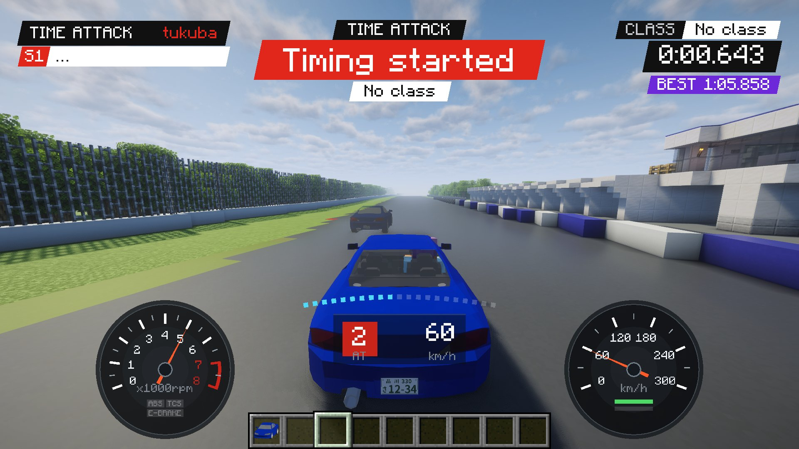
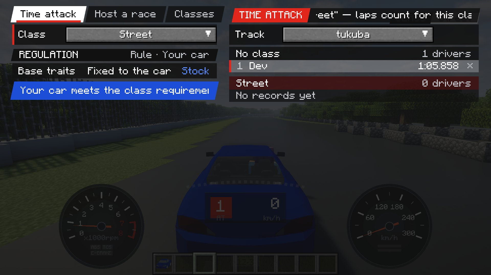

Host and join with one key. Set a regulation, line up, and go.主催も参加も、キー 1 つで。レギュレーションを決めて、並んで、スタート。
Build a course once, then open and run races from the K screen.コースを作れば、あとは K の画面からレースを開いて走れます。
Place a start line and checkpoints anywhere in your world.ワールドのどこにでも、スタートラインとチェックポイントを置けます。
Choose the track, laps and regulation.トラック・周回・レギュレーションを決めて開きます。
Everyone in the world gets an invite and joins from K.ワールドの全員に案内が届き、K から参加できます。
Start lights, then everyone goes on GO.スタートシグナルが消えたら、一斉にスタート。

Even out the cars with limits on power, weight, grip and more.出力・車重・グリップなどの条件で、車の性能をそろえます。
| Rule条件 | What it measures何を測るか |
|---|---|
| Base traits車の素性 | Locks the settings that only make a car faster when changed (size, tyre traits, drag and so on) to the car's stock values.変えると車がただ速くなるだけの項目（車の大きさ、タイヤの性質、空気抵抗など）を、車種の決まった値に固定できます。 |
| Max power最高出力の上限 | Peak power in PS, including turbo and parts.車の最高出力（PS）。ターボやパーツの分も含みます。 |
| Min weight車重の下限 | Car weight in kg.車重（kg）。 |
| Min power-to-weightパワーウエイトレシオの下限 | Weight ÷ power (kg/PS). Lower is quicker.車重 ÷ 最高出力（kg/PS）。小さいほど速い車です。 |
| Max gripグリップの上限 | Tyre grip, including tyre parts.タイヤのグリップ。タイヤのパーツの分も含みます。 |
| Max downforceダウンフォースの上限 | Downforce at 200 km/h, including aero parts.200 km/h でのダウンフォース。空力パーツの分も含みます。 |
| Drivetrain駆動方式 | Which of FF, FR and 4WD may race.FF・FR・4WD のどれで出られるか。 |
| Forced induction過給機 | Whether a turbo may be fitted.ターボを付けてよいか。 |
| Driving aids運転補助 | Whether TCS and ABS are allowed.TCS と ABS を使ってよいか。 |

Every entrant's car is checked automatically.参加者全員の車を自動で判定します。
Cars outside the rules watch instead of racing.条件を外れた車は観戦に回ります。
Save your favourite rules as named classes for races and time attack.よく使う条件をクラスとして保存し、レースにもタイムアタックにも使えます。
In a race or a class, the setup screen only lets you tune within the rules.レース中もクラスで走るときも、セッティング画面は条件の範囲内でしか動かせません。

Everyone's position and gap to the leader, live.全員の順位とトップとの差をリアルタイムで。
Lap time and your gap to your best.ラップタイムと、自己ベストとの差。
Checkpoint deltas, personal bests and the final lap.チェックポイントの差、自己ベスト更新、ファイナルラップ。

Cross a start line and timing begins. Sector times, your gap to your best, and your best lap as a ghost.スタートラインを越えれば計測開始。区間タイム、自己ベストとの差、ベストの走りをゴーストで。


Find races and share regulations on Discord.Discord でレースの告知やレギュレーションを共有できます。